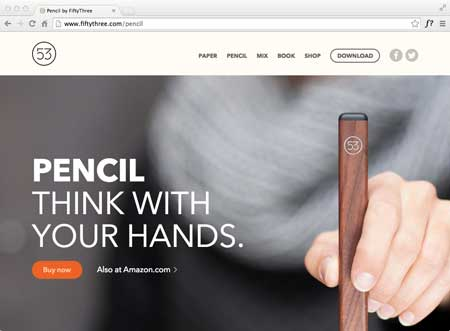
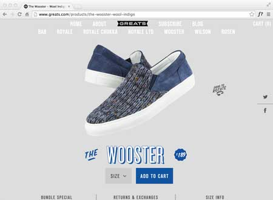
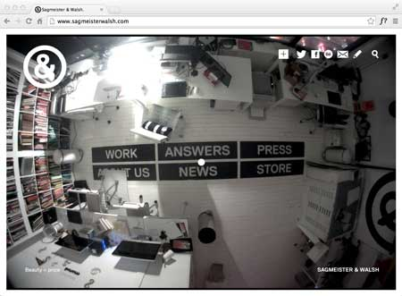
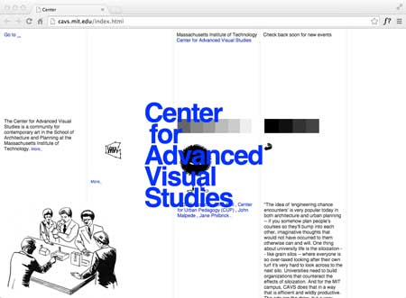

reflection
I'm interested in building a small e-commerce site; something that showcases a small, but possibly growing collection, of handmade products. My biggest challenge is to think about the user-experience of the site first, instead of coming to a design approach with a pre-conceived notion of how a certain type of site should look. I'd like to design & code a site that doesn't use overused e-commerce conventions or dated interactivity.
I've done a bit of research on e-commerce websites. Here are a few that I am inspired by:
Beautiful e-commerce site for a leather goods company. A limited color palette of grays & golds is really stunning & compliments well-styled product photography. I particularly like the "Design / Details / Delivery" section of each product page. The product name & purchase button, with a transparent background and a 1 pixel border, is in a fixed position as you scroll through the page. Unfortunately, there's legibility issues as when it's viewed over a field of text or full-color photography.

I love how rich the site feels, especially considering there are only a few products: the [interactive] pencil, paper [app], book [printing], and mix [community]. Long scrolling pages are divided nicely into distinct sections; beautiful design; and well-produced videos demonstrating the product. The only issue I have with the website is that there is a secondary navigation in the footer with fairly high-level information: news; making; etc. It's not the best user-experience to have to scroll through a long page to access this level of nav.

Another site which only has a few products—less than 10 different sneaker styles, but has a lot of content that's visually interesting and well-organized. The homepage is a bit cluttered—not just because of the number of images displayed in the grid, but also because they are all photographed against a wood floor background. I really like each individual product page. There's the ability to see each pair of sneakers 360 degrees; in an array of colors; all features; look book imagery & social media. The navigation, present at the top of each page with no background, is a bit difficult to see in some scenarios.
review

This studio is known for being exhibitionistic (Figure 1.), and although they aren't sitting at their desks naked, it is pretty appropriate that their homepage is a webcam feed of their studio. Nevertheless, the full screen image of the studio is intriguing and smartly integrates the navigation directly into the image. The homepage has a strong diagonal: the studio's logo in the top left corner; to the main navigation in the center of the webcam image; to the full name of the studio, Sagmeister & Walsh, in the bottom right corner. Tucked into the top right corner is the secondary navigation with a drop-down of the main menu and social media links. On secondary pages, the secondary navigation becomes the main navigation. A black & white color palette, even in the webcam feed, allows the color of the studio's work to have the strongest visual impact. The typography is simple & clear—again giving full attention to their work.

At first glance, I thought this was interesting, you know, so uncool that it's cool. MIT is known for being different, intellectually creative, etc., but the more time I spent looking through the homepage, the more I realized that it is not intentionally bad, it's just BAD. "Center for Advanced Visual Studies" is the first element on the page that captures my attention, because of it's size, color, and position. It is not a designed logotype, but rather 68px Helvetica set to #00F in a fixed center position. The blue color looks like the default link color—in fact, all of the links on the homepage are the same blue color. Aside from this big type, all of the other type on the homepage is the same font size, providing no hierarchy of information. The imagery on the homepage is confusing and distracting. There's a weird clipart image in the bottom corner that looks like a boss wagging his finger disapprovingly at his employees; a weird amoeba venus-fly trap thingie in the center; and a seizure inducing color bar cycling through shades of black. There is an underlaying grid to the site, but elements seem haphazardly arranged on it.
bring me back to the reflection, pretty please.